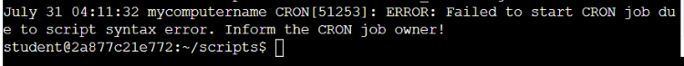
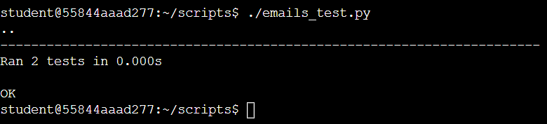

Nabila Alia: Network Engineering & IT Infrastructure
A fresh graduate Network Engineer with 6 months of IT internship experience. CCNA Certified Professional. Dedicated to lifelong learning and exploring network automation.
Developed a Python script to parse system log files, identify error patterns, and generate summary reports using dictionaries and CSV output.

Qwiklabs: Work with Log Files
ITDeveloped a Python script to parse system log files, identify error patterns, and generate summary reports using dictionaries and CSV output.

Implement Unit Test
IT
A simple test to check for basic functionality, check for edge cases, and code with a try/except statement.

Certifications
- Cisco CCNA
- Cisco Junior Cybersecurity Analyst
- Google IT Automation with Python (In Progress)
Contact
Email: nabilaaliahazman@gmail.com